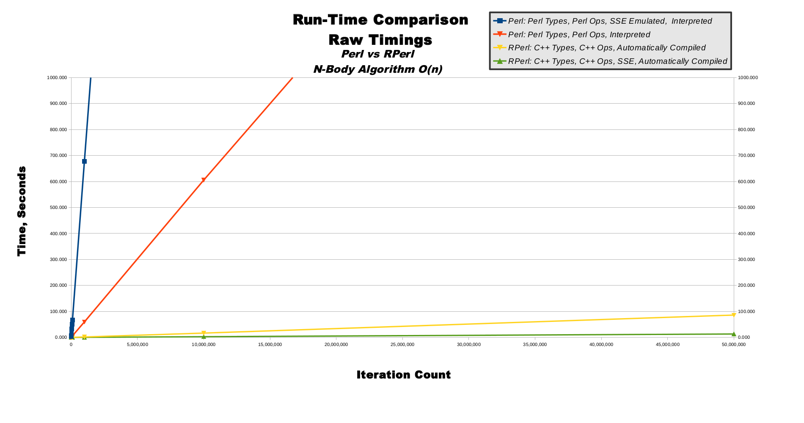
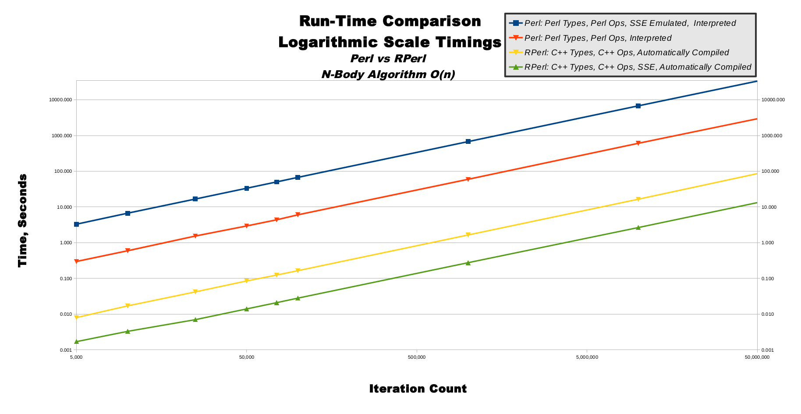
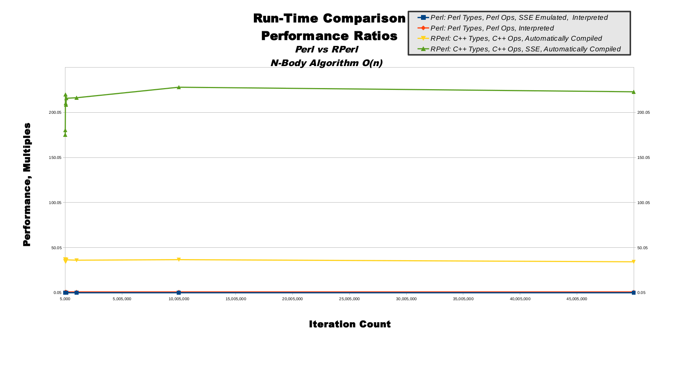
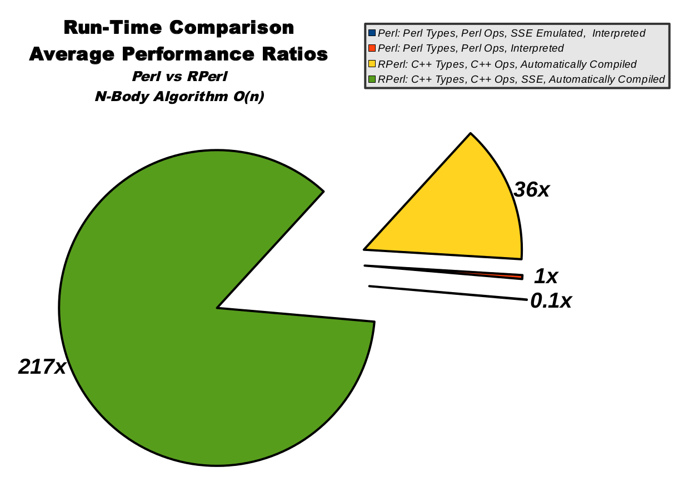

N-Body Performance Benchmarks
Last Update: September 15th, 2015
Overview
N-body is used, in our case, as a solar system simulator.N-body includes 4 execution modes:
- Pure Perl with SSE emulation is blue
- Pure Perl is red
- RPerl's C++ data mode is yellow
- RPerl's C++ data mode with SSE is green
Table Of Contents
N-Body, Raw Timings, TableN-Body, Raw Timings, Graph
N-Body, Logarithmic Scale Timings, Graph
N-Body, Performance Ratios, Table
N-Body, Performance Ratios, Graph
N-Body, Average Performance Ratios, Chart
N-Body, Raw Timings, Table
This table shows the most basic data which was gathered directly from running the benchmarks. The far left column shows increasingly-large number of iterations, which is important because running the solar system simulator for more steps should take a longer time. There is then 1 column for each of the 4 execution modes. Each execution mode was run for each number of iterations, except where listed as a "PROJECTED" estimate value.| Time, Seconds | ||||
|---|---|---|---|---|
| Iteration Count | Perl: Perl Types, Perl Ops, SSE Emulated, Interpreted | Perl: Perl Types, Perl Ops, Interpreted | RPerl: C++ Types, C++ Ops, Automatically Compiled | RPerl: C++ Types, C++ Ops, SSE, Automatically Compiled |
| 5,000 | 3 | 0.3 | 0.01 | 0.002 |
| 10,000 | 7 | 0.6 | 0.02 | 0.003 |
| 25,000 | 17 | 1.5 | 0.04 | 0.007 |
| 50,000 | 33 | 2.9 | 0.09 | 0.014 |
| 75,000 | 50 | 4.4 | 0.12 | 0.021 |
| 100,000 | 67 | 6.0 | 0.17 | 0.028 |
| 1,000,000 | 668 | 59 | 1.65 | 0.275 |
| 10,000,000 | 6,680 | 605 | 16.46 | 2.66 |
| 50,000,000 | 33,400 (PROJECTED) | 2,955 | 85.85 | 13.26 |
N-Body, Raw Timings, Graph
Predictable computing algorithms possess a quality known as computational complexity, which is a mathematical measurement used to predict how long an algorithm will take to run when given input data of different sizes. The n-body algorithm used in these performance benchmarks has a computational complexity known as O(n), pronounced as "big oh of n" where n, in this O(n) usage, refers to the number of iterations. (This is a bit confusing, because the 'n' in n-body stands for the number of heavenly bodies, not the number of iterations). This means if we give n-body an iteration count of 5, then it will take a time factor of 5 multiplied by some system-dependent constant. If we give nbody an iteration count of 10, then it will take twice as long to run as it did for 5 iterations. This computational complexity of O(n) is specific (but not unique) to the n-body algorithm. When we measure n-body's run-time, we can be reasonably sure our measurements are related to the 2 primary computational resources of CPU speed and RAM capacity, as opposed to misleading measurements of secondary computational resources such as hard-drive read/write or network bandwidth. This makes our measurements more meaningful.This line graph shows linearly-increasing iteration counts on the horizontal x-axis also-linearly-increasing time on the vertical y-axis. The O(n) computational complexity of n-body directly converts to the graph of y=m*x or "y equals m times x" where m is the system-dependent run-time performance constant mentioned in the previous paragraph. This produces graphs with straight lines. You can see how pure Perl SSE emulation in blue has a very steep slope, whereas normal pure Perl mode in red is significantly less steep. Contrastingly, RPerl's C++ SSE mode in green is so fast it barely raises off the 0-second mark for the entire graph.
|  |
{kind=link}
N-Body, Logarithmic Scale Timings, Graph
This line graph show logarithmically-increasing values on both the x-axis and y-axis. On a linear graph axis, the distance between 1-to-10 is equal to the distance between 101-to-110, and is one-tenth of the distance between 10-to-100. This means large values are shown far away from small values on a linear axis. On a logarithmic graph axis, the distance between 1-to-10 is about one-tenth of the distance between 101-to-110, and is equal to the distances between both 10-to-100 and 100-to-1,000. This means large values are shown close to small values on a logarithmic axis.The use of logarithmic axes can morph smooth curves into smooth lines, as shown in this line graph. Although there are tiny variances in the lines, to the human eye all 4 lines appear to be perfectly straight and running parallel to one another. The straightness of the lines indicates the n-body algorithm's computational complexity is scaling smoothly as predicted. In other words, the computational complexity is staying very close to O(n) as the iteration count increases. The constant relative distances between the lines indicate the 4 execution modes are all scaling at a steady rate and closely proportionate to one another. This means our benchmark algorithms are running correctly, and scaling nearly perfectly.
|  |
{kind=link}
N-Body, Performance Ratios, Table
This table shows the important performance ratios extrapolated from the first raw data table. The 4 columns are the same as the first table. The last row shows the simple rounded averages for each column, which gives us meaningful ratios from which we may evaluate all 4 execution modes. The ratios are normalized to pure Perl's performance, so the second ratio column is shown as all 1.0 values. This means for a iteration count of 1,000,000 we can see RPerl's C++ data mode runs 36.2 times faster than pure Perl, and RPerl's C++ data mode with SSE runs 216.3 times faster than pure Perl.Of special interest are the performance ratios of both RPerl data modes, which stay relatively steady as iteration count increases, indicating proper RPerl run-time performance scalability.
| Performance, Multiples | Iteration Count | Perl: Perl Types, Perl Ops, SSE Emulated, Interpreted | Perl: Perl Types, Perl Ops, Interpreted | RPerl: C++ Types, C++ Ops, Automatically Compiled | RPerl: C++ Types, C++ Ops, SSE, Automatically Compiled |
|---|---|---|---|---|
| 5,000 | 0.1 | 1.0 | 37.3 | 175.3 | 10,000 | 0.1 | 1.0 | 35.0 | 180.3 | 25,000 | 0.1 | 1.0 | 36.6 | 219.9 | 50,000 | 0.1 | 1.0 | 34.6 | 210.1 | 75,000 | 0.1 | 1.0 | 35.3 | 208.5 | 100,000 | 0.1 | 1.0 | 36.6 | 215.8 | 1,000,000 | 0.1 | 1.0 | 36.2 | 216.3 | 10,000,000 | 0.1 | 1.0 | 36.8 | 228.0 | 50,000,000 | 0.1 | 1.0 | 34.4 | 222.9 | Rounded Average | 0.1 | 1 | 36 | 217 |
N-Body, Performance Ratios, Graph
This line graph illustrates the non-averaged data from the performance ratios table. Like the raw and logarithmic timing graphs, the x-axis represents iteration count. Unlike the timing graphs, the y-axis represents performance ratios, not time in seconds. Pure Perl in blue is, by definition, a totally flat line at the 1.0 value along the bottom of the graph. RPerl's C++ data mode in yellow is a relatively steady line near the value of 36, hovering above pure Perl near the bottom. RPerl's C++ data mode with SSE is shown in green, and flies far above the other 3 execution modes at the top of the graph, showing the steadily-scaling performance ratios as the iteration count increases while moving to the right.|  |
{kind=link}
N-Body, Average Performance Ratios, Chart
This pie chart illustrates the averaged data from the performance ratios table. The size of the pie slices represent relative speed, so a bigger slice means higher run-time performance. Pure Perl in blue is only about 0.39% of the total pie, while RPerl's C++ data mode with SSE in green clearly dominates.|  |
{kind=link}